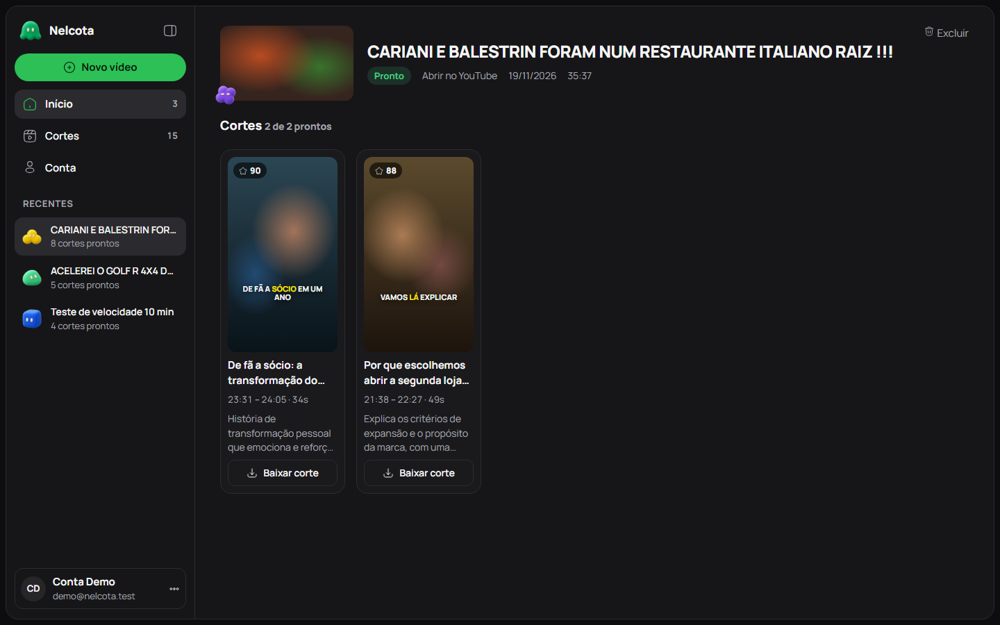
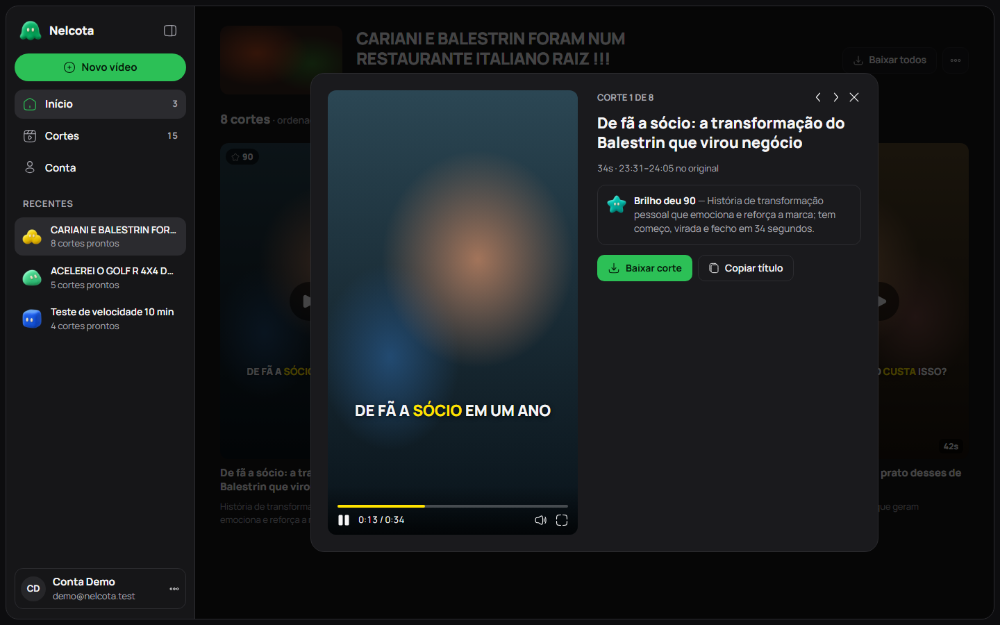

Tela do vídeo · atual + 3 direções
Mesmo vídeo, mesmos 8 cortes (títulos longos, um que falhou), dentro da nova
barra lateral. 1440 × 900 e celular 390. Nada disso está no app ainda.
Igual nas três: cabeçalho limpo (miniatura
sem o mascote em cima, título, uma linha de dados, "Baixar todos" e um menu ⋯ com
Excluir); a nota passa a ser
a nota do Brilho, com o motivo dele ao lado;
título e explicação aparecem inteiros; "Copiar título" para postar.
Recomendo
A · Player + lista
Ideia: um player grande do corte escolhido à esquerda; à direita, o
título inteiro, o motivo do Brilho e a lista de todos os cortes por nota.
Clicar na lista troca o player.
Bom em: assistir de verdade (o corte em tamanho de celular), comparar
e baixar sem sair da página; funciona com 2 ou com 10 cortes.
Custa: só um corte é visto por vez.
Por que recomendo: o trabalho aqui é escolher o melhor corte para
postar; ver grande e comparar na mesma tela resolve isso direto.
B · Cartões grandes + janela
Ideia: grade de cartões bem maiores (4 por linha), com nota, duração
e título inteiro. Clicar abre uma janela com o player e os detalhes, e dá
para passar de um corte para o outro.
Bom em: ver vários cortes de uma vez, como uma galeria.
Custa: a explicação fica cortada nos cartões; assistir exige abrir a
janela.
C · Linha do tempo
(mais ousada)
Ideia: uma barra com o vídeo original inteiro mostra de onde saiu
cada corte. Embaixo, um corte por linha com explicação completa e a nota do
Brilho em destaque.
Bom em: entender o vídeo original e os trechos escolhidos; tudo
legível.
Custa: páginas longas com 10 cortes; a prévia do corte fica pequena.
Atual

Cartões de 180 px, título e explicação cortados, "nota 88" sem contexto, só
"Baixar corte".
A · Player + lista
Recomendo
O corte que falhou aparece na lista com o Guarda e "Tentar de novo". No celular,
o player fica em cima e a lista embaixo.
B · Cartões grandes + janela

Embaixo: a janela aberta ao clicar num cartão, com setas para o corte anterior e
o próximo.
C · Linha do tempo
Cada trecho verde é um corte; o vermelho falhou; o contornado é o selecionado.